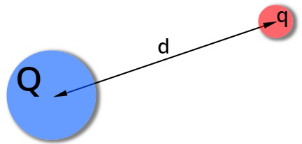
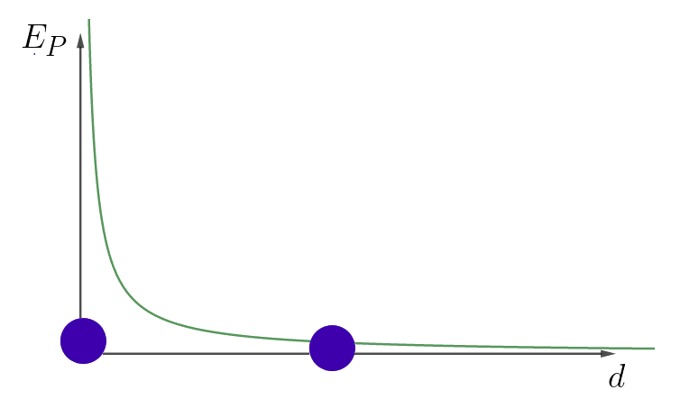
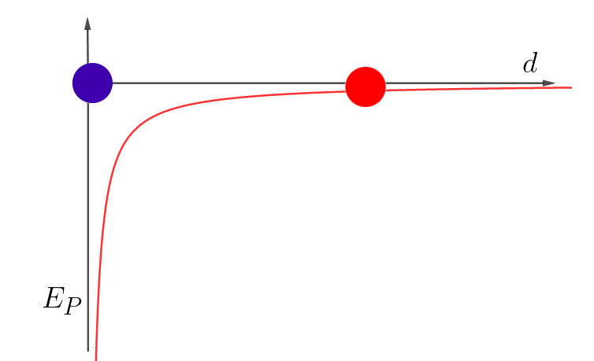
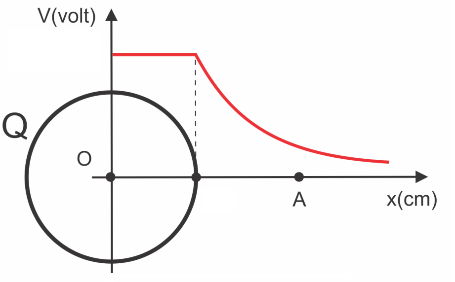
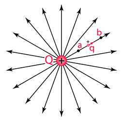

Aula9-75: Energia potencial elétrica, Potencial elétrico e D.D.P
Energia potencial elétrica
|
Podemos associar às cargas elétricas pelo menos dois tipos de energia: a energia cinética e a energia potencial. Essas energias têm o mesmo significado das energias de mesmo nome já estudadas: a energia cinética é aquela decorrente do movimento da carga, ao passo que a energia potencial decorre da posição que a carga ocupa no sistema e exprime a potencialidade — a capacidade — que essa carga tem de adquirir energia cinética, isto é, movimento. |
 |
Para cargas puntiformes, podemos encontrar o valor da energia potencial por meio da seguinte fórmula:
A unidade de medida para energia potencial no SI é o:
|
 |
 |
Potencial elétrico
Potencial elétrico é uma grandeza que indica a quantidade de energia potencial disponível para cada unidade de carga.
A unidade de medida para potencial elétrico no SI é o:
➔ POTENCIAL ELÉTRICO NO INTERIOR DE CONDUTORES
O potencial elétrico no interior de um condutor assume valor constante. A partir da superfície, o potencial cai com a distância. |
 |
Diferença de potencial (DDP)
Como o próprio nome indica, a D.D.P. nada mais é do que a diferença de potencial existente entre dois ou mais pontos. Para calculá-la, aplicamos:
|
ATENÇÃO: A subtração acima não corresponde a uma variação no sentido em que comumente usamos esse termo (valor final menos o inicial); para calcular a diferença de potencial elétrico entre dois pontos, subtraímos do potencial do primeiro ponto o potencial do segundo (UA - UB), e não o oposto. Entre dois pontos em diferentes potenciais, isto é, entre dois pontos que guardam uma diferença de potencial entre si, sempre haverá um campo elétrico que fará, se houver cargas, surgir sobre elas forças elétricas. |
 |